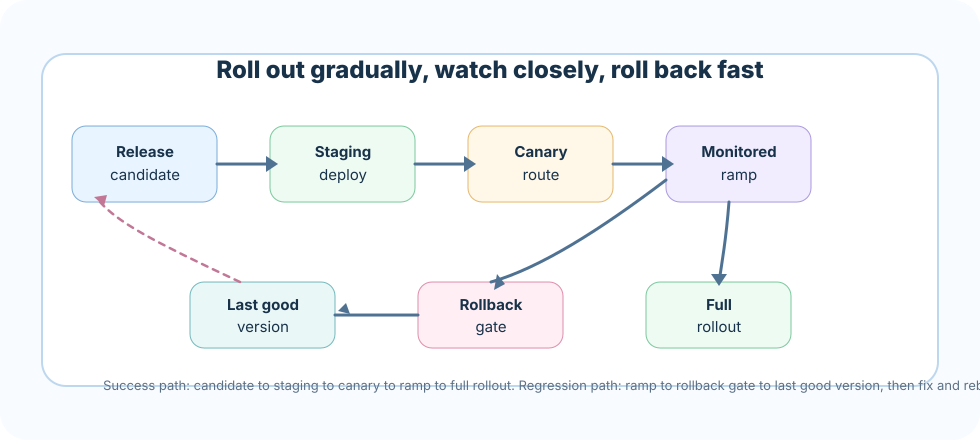

Deployment is the moment a RAG system stops being a notebook and starts making promises. The right pattern depends on who can use it, what data it touches, how fast it must answer, and how confidently your team can operate it after launch.
What you will be able to decide
When a static demo is enough, and when it becomes risky theater.
How to separate local CLI workflows, online APIs, hosted frontends, indexing jobs, vector databases, and operations.
Which controls are mandatory for private data: auth, authorization filters, secrets, traces, eval gates, rollback, and cost limits.
How to build a roadmap from demo to production without overbuilding the first release.
Shipping a new embedding model, prompt, or retrieval tweak to every user at once is how a small regression becomes a company-wide incident. Good deployment patterns turn that all-or-nothing gamble into a series of small, reversible bets.
Core ideaDeployment patterns for RAG are the rollout mechanics - versioned builds, canary traffic, monitored ramps, and a documented rollback plan - that let you change code, prompts, models, and indexes in production without breaking trust for everyone at once.
Sub-topic 1 of 13
The Deployment Problem
A RAG application has more moving parts than a normal CRUD app: source documents, chunking, embeddings, indexes, prompts, model providers, retrieval parameters, citations, feedback, traces, and eval sets. A release can fail even when the web server is healthy, because the wrong index shipped with the right prompt or because retrieval filters were skipped for one user group.
The deployment question is not "Where can I host this?" It is "What is the smallest architecture that satisfies privacy, reliability, latency, cost, rollback, and support expectations?"
Decision inputs
audience: public demo | internal users | customers | regulated users
data: mock | public | private | regulated
traffic: one user | team | department | internet scale
risk: learning | workflow helper | business critical | legal/safety critical
maturity: solo builder | small team | platform team | enterprise ops
Deployment decision framework
Classify the data first. Public mock data can be static. Private data needs authentication before retrieval and authorization filters inside retrieval.
Classify the promise. A portfolio demo promises learning. A production assistant promises support, uptime, traceability, and rollback.
Separate online and offline work. Answering users is latency-sensitive. Crawling, chunking, embedding, and backfills are batch jobs.
Version every behavior input. Code, prompt, config, retriever settings, embedding model, index schema, and corpus snapshot must be traceable.
Choose the cheapest pattern that still protects trust. A static page is great for mock demos. It is irresponsible for private documents.
Sub-topic 2 of 13
Real-Life Analogy: The Fleet-Wide Software Update
An airline that pushes a new flight-management software build never installs it on every aircraft in the fleet the same night. It picks a handful of canary planes on low-risk routes, watches telemetry from those flights closely, and only widens the rollout once the data looks clean. If something looks wrong mid-flight-day, there is a rehearsed way to revert those planes to the previous certified build before the next departure, not a scramble to invent one.
RAG deployments deserve the same discipline. A new embedding model, a rewritten prompt, or a re-tuned reranker is a "software update" for how your system understands and answers questions. Route it to a canary slice of traffic first, watch quality and cost like a flight engineer watches instruments, and keep a rehearsed rollback path ready - covering the code, the prompt, and the index together - so a bad build never gets to fly the whole fleet.
Sub-topic 3 of 13
Static Demo Pattern
A static deployment is ideal when the goal is education, portfolio proof, or stakeholder review with mock data. The app can run from HTML, CSS, JavaScript, and precomputed sample responses. There are no server secrets and no live private retrieval.
browser
-> static assets
-> sample corpus JSON
-> precomputed or client-side demo response
No server secrets. No private documents. No write access.
Use it for
Course projects, documentation demos, sales walkthroughs, and portfolio artifacts.
Public corpora, synthetic documents, or snapshots that are safe to expose.
Explaining the user experience before investing in backend operations.
Pros
Very cheap, fast, cacheable, and easy to share.
Low operational burden: no runtime, no database, no model key in production.
Great for visualizing retrieval, citations, and failure states.
Cons
Cannot protect secrets or private data.
Cannot enforce real user-specific access control.
Can mislead stakeholders if sample answers hide real latency, cost, or retrieval failures.
Common mistakes
Putting API keys in frontend code.
Using private documents because "the repo is only shared internally."
Calling a mock demo production-ready because the UI looks polished.
Sub-topic 4 of 13
Local CLI Pattern
A CLI is the production engineer's workshop. It makes indexing, evaluation, smoke tests, migrations, and incident reproduction repeatable. Even hosted systems should keep a local CLI path for maintainers.
Debugging one bad answer with the same retriever parameters used in production.
Trade-offs
The CLI gives reproducibility and low cost, but it is not a multi-user product boundary. It should not become the only place your deployment logic exists. Promote shared behavior into libraries used by both CLI and API.
Concrete commands
rag ingest --source ./docs --snapshot 2026-07-11
rag index --snapshot 2026-07-11 --embedding text-embedding-3-large
rag eval --suite release-gate.yaml --index 2026-07-11
rag smoke --question "How do I reset my badge?" --expect-citation
Sub-topic 5 of 13
Backend API Pattern
A backend API is the clean boundary for production RAG. It protects secrets, checks identity, applies authorization filters before retrieval, records traces, enforces rate limits, and gives the frontend a stable contract.
Sync or async: use synchronous responses for short answers; use jobs or streaming for long-running workflows.
Stateless or stateful: keep request handling stateless when possible; store conversations and feedback in explicit databases.
Single service or split services: start with one service for simpler ownership; split ingestion, retrieval, and generation when scale or team boundaries demand it.
Provider abstraction: isolate model and vector provider details enough to test fallbacks, but avoid a generic wrapper that hides important limits.
Minimum API contract
POST /answer
input: user_id, question, conversation_id, filters
output: answer, citations, confidence_signals, trace_id
GET /health
checks: app, model_provider, vector_db, trace_store, build_version
POST /feedback
input: trace_id, rating, correction, unsafe_or_wrong_reason
Sub-topic 6 of 13
Hosted Frontend Pattern
The frontend turns the RAG service into a usable product. It must make citations inspectable, uncertainty visible, and recovery paths obvious. Production frontends should not hide source quality behind a chat bubble.
What the frontend owns
Authentication handoff and session handling.
Question input, streaming answer display, citation panels, and source previews.
Feedback capture with trace IDs so operations can reproduce failures.
Clear error states for rate limits, missing access, provider outages, and empty retrieval.
Architecture choices
Static frontend plus API: good default for many apps; simple deployment with strong backend controls.
Server-rendered app: useful when auth, routing, and data fetching are tightly coupled.
Internal tool shell: best for employee assistants where identity, audit, and permission boundaries matter more than visual polish.
Common mistakes
Showing generated answers without source snippets or document dates.
Letting the browser choose retrieval filters.
Capturing feedback without storing the prompt, retrieved chunks, model version, and index version needed to debug it.
Sub-topic 7 of 13
Vector Database Pattern
The vector store is not just a nearest-neighbor box. In production it becomes a governed retrieval system with metadata filters, snapshots, backups, schema migrations, capacity planning, and access policy.
Teams already operating Postgres, moderate scale, transactional metadata
Index tuning, query plans, noisy neighbors
Managed vector DB/search
Production scale, snapshots, filtering, service SLOs, managed operations
Cost, vendor limits, migration planning
Production requirements
Metadata filters for tenant, document ACL, version, language, freshness, and source type.
Index versioning so releases can roll forward and back.
Snapshot and restore tests, not just backup configuration.
Capacity tests for query concurrency, embedding backfills, and reindex windows.
Data deletion workflows for retention rules and user requests.
Sub-topic 8 of 13
Architecture View
A release candidate is a bundle of code, prompt, and index versions moving together. It earns trust in stages: staging first, then a small canary slice of real traffic, then a monitored ramp that compares quality, latency, and cost against the last good version. Only then does it become the full rollout. If the ramp shows a regression, the rollback gate sends traffic straight back to the last good version while the candidate goes back for a fix - never the other way around.

Deployment patterns turn a risky all-at-once release into a staged, reversible rollout with a rehearsed rollback gate.Sub-topic 9 of 13
Operations and Release Controls
Production RAG is operated through evidence. You need to know which version answered, what it retrieved, whether citations supported the answer, how much it cost, and how to return to the last good state.
Release sequence
Build code and config with immutable version identifiers.
Build or select the index snapshot for the release.
Run unit tests, retrieval evals, answer-quality evals, safety checks, and cost estimates.
Deploy to staging with production-like auth and data boundaries.
Run smoke tests against known questions and expected citations.
Canary to a small cohort, compare latency, error rate, retrieval quality, and feedback.
Ramp gradually, monitor dashboards, and keep rollback ready until the release is stable.
Production checklist
Secrets are stored outside code and rotated on a schedule.
Authentication happens before retrieval; authorization filters are enforced server-side.
Health checks cover model provider, vector DB, trace store, and index version.
Every answer records trace ID, prompt version, model version, retriever settings, retrieved chunks, and cost.
Eval gates block releases that regress groundedness, citation quality, refusal behavior, or latency.
Rollback covers code, prompt, config, model choice, and index snapshot.
Rate limits, abuse controls, and budget alerts are active.
Incident runbooks explain provider outage, bad index, high cost, empty retrieval, and data leakage response.
Common production mistakes
Deploying the answer API and index rebuild as one fragile process.
Skipping ACL filters because "the prompt tells the model not to reveal private data."
Only monitoring uptime while ignoring retrieval miss rate, citation support, and cost per answer.
Rolling back code while leaving the broken index active.
Letting evaluation data go stale after the first launch.
Sub-topic 10 of 13
Common Mistakes
M01
Swapping the embedding model without a full re-index
Symptom: old vectors and new vectors sit in the same index, so similarity scores stop meaning anything and retrieval quality quietly collapses.
Better move: treat a new embedding model as a new index build. Re-embed the full corpus, version it separately, and cut over atomically once it passes eval.
M02
No rollback plan for a prompt or model regression
Symptom: a prompt or model version ships, quality drops, and the team improvises a fix live instead of reverting.
Better move: version prompts and model choices like code, and rehearse the revert path before you need it under pressure.
M03
Blue/green deploys that ignore the stateful vector index
Symptom: the app swaps cleanly between blue and green, but both environments point at the same mutable index, so a bad write corrupts both.
Better move: version the index alongside the app and let each environment pin its own index snapshot.
M04
Skipping canary traffic for retrieval changes because "it's just search"
Symptom: a reranker or chunking change ships to 100% of users at once and silently degrades answer grounding.
Better move: route retrieval changes through the same canary and monitored-ramp discipline as code and prompt changes.
M05
Coupling index rebuilds to code deploys
Symptom: a bad code release forces a rollback that also reverts a perfectly good index, or a bad index can't be rolled back without redeploying code.
Better move: version code and index snapshots independently so either can roll back without dragging the other along.
M06
No feature flag for risky retrieval changes
Symptom: a new retrieval strategy can only be turned off by a full redeploy, so a bad rollout stays live for the length of a build pipeline.
Better move: gate risky retrieval and ranking changes behind a flag that can be flipped off in seconds.
M07
Deploying to all tenants simultaneously instead of staging the rollout
Symptom: a multi-tenant regression hits every customer at the same moment, turning one bad release into a mass incident.
Better move: stage rollout by tenant cohort, starting with low-risk or internal tenants before widening.
M08
Missing a documented rollback runbook
Symptom: during an incident, no one agrees on what "roll back" means for code, prompt, model, and index together, so recovery is improvised and slow.
Better move: write and rehearse a runbook that names the exact steps and owners for reverting every layer of a release.
Sub-topic 11 of 13
Interview-Level Understanding
A strong answer sounds like this: "I treat a RAG release as a bundle of versioned code, prompt, and index that moves through staging, a canary slice of real traffic, and a monitored ramp before it becomes the full rollout. Retrieval changes get the same canary discipline as code changes, because a bad embedding model or reranker degrades trust just as fast as a bad deploy. I version the index independently from code so either can roll back without dragging the other along, gate risky retrieval changes behind feature flags, stage multi-tenant rollouts by cohort, and keep a documented, rehearsed rollback runbook so recovery during an incident is a known procedure, not an improvisation."
Sub-topic 12 of 13
Project Roadmap
You will build a RAG deployment planner. Given a scenario, it recommends a deployment pattern, explains the trade-off, lists required controls, produces a launch checklist, and names the first day-2 operations tasks.
Milestones
Classify the scenario: data sensitivity, traffic, latency SLO, user audience, team maturity, and business risk.
Choose the pattern: static demo, local CLI, hosted API, hosted frontend plus API, or enterprise deployment with managed vector DB.